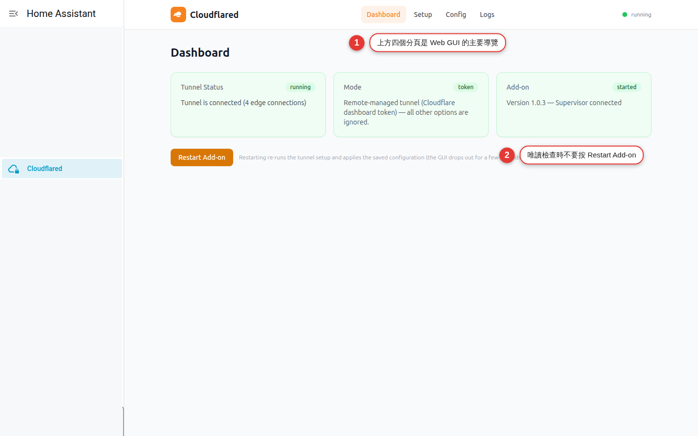

Dashboard: read the tunnel's health
Read the three status cards — Tunnel, Mode and Add-on — one layer at a time, and understand that edge connections are ready connections to the Cloudflare edge, not a count of visitors. This chapter only observes, cross-checks and records; you never press Restart Add-on.
One red card does not mean the whole service is down
The Dashboard puts three different questions in one place: Tunnel Status tells you whether cloudflared already has a usable edge connection, Mode tells you whether the configuration is local or token mode, and Add-on tells you what the add-on and Supervisor report. They are related, but none of them stands in for another.
For example, if the Home Assistant in your living room works locally while Tunnel shows stopped, the problem is usually at the connector or before it; if Tunnel is running and your phone gets a 502 from outside, the edge is connected and you should look at DNS, the hostname, ingress or the origin. Restarting on the strength of a color alone usually washes away the most useful thing you had: the first error.
A mental model for the three cards and edge connections
| Card or field | What the data means | What it does not mean |
|---|---|---|
Tunnel: running | cloudflared metrics /ready reports readyConnections greater than zero | No guarantee that DNS, every hostname, the origin or the sign-in page is fine |
Tunnel: starting | Metrics are reachable, but there is no ready connection yet, or readiness has not finished | Not necessarily a failure; during start-up it can simply be transient |
Tunnel: stopped | The Web GUI cannot reach the local cloudflared metrics; a blank first-time configuration looks like this too | Not the same as the whole of Home Assistant or the Web GUI stopping |
| The edge connections count | How many connector-to-edge connections are ready right now | Not a count of users, browser tabs, hostnames or devices |
Mode: local | No token is set; the add-on manages the tunnel locally | Not the same as authorization being finished, or as being connected |
Mode: token | A remotely managed tunnel token is set | Does not mean the Cloudflare public hostname is configured correctly |
| Add-on state | The current add-on state as Supervisor reports it | Not the same as cloudflared readiness, or as an external URL working |
| Supervisor connected | The Web GUI backend can read the Supervisor API and the version and state it returns | Not the same as the Cloudflare network being reachable |
Eight steps to one read-only health check
Check Home Assistant locally first
Sign in from your home Wi-Fi using the local URL, use one page that carries no risk, and note the time. If the local route fails too, deal with Home Assistant or your local network first; do not blame the tunnel for everything.
Open the Dashboard through Ingress
Go in through the Cloudflared Web GUI's Home Assistant Ingress; do not make the internal 8099 public and do not connect to it directly. Confirm you are on the right Home Assistant host, so you do not mistake a healthy test machine for the production one.
Record Tunnel Status word for word
Write down
running,starting,stoppedor unknown, and the edge connections count. Record the time and the non-sensitive result only; do not capture a hostname, a tunnel ID, an account or an IP.Check that Mode matches the design
Use Chapter 4 to confirm whether local or token is expected. If the mode does not match, stop and check with whoever administers it; do not go into Config to clear the token, and do not press Restart hoping it will right itself.
Read the Add-on and Supervisor state
Record the add-on state, whether the version loaded, and whether the text says Supervisor connected or unreachable. Supervisor unreachable only tells you the management API path is off; cross-check it against the Home Assistant add-on detail page.
Cross-check against Setup
In locally managed mode, see which of the four steps it stops at; in token mode, look at the remotely managed notice. If there is a prepare failed, note the time. Only look: do not open the authorization URL, do not copy the link, and do not start fixing settings just because it says stopped.
Find the same time window in Logs
Read the smallest range around the error first, and find the first clear validation, authorization, DNS, network or origin message. Logs can carry hostnames, IPs, UUIDs and sensitive URLs, so redact before you record anything.
Test from outside over mobile data
If the service is already live, turn Wi-Fi off on your phone and open the existing HTTPS hostname; confirm you reach the right sign-in page and that it keeps updating. When you are done, go back to the Dashboard and record the state once more. Nowhere in this flow do you press Restart Add-on.

Common status combinations and what to do next
| Combination | The more likely reading | First thing to do |
|---|---|---|
| stopped + unconfigured | The options are completely blank; the fork keeps the GUI available without starting the tunnel | Expected on a first install; plan with Chapter 4 and do not Restart |
| starting + Supervisor connected | The GUI and the management API are fine; cloudflared has no ready connection yet | Wait a short while and read Logs for network or protocol messages |
| running + edge connections > 0 | At least one connector-to-edge connection is ready | Test DNS, the hostname, the origin and sign-in next; do not declare everything fine |
| running + a 404 from outside | The edge works, but the hostname or the ingress rule may not have matched | Check the requested hostname, the routes and the catch-all |
| running + a 502 from outside | Cloudflare can reach the connector, but the origin may be unreachable or answering with an error | Test the origin on your local network first, then check the service protocol, address and port |
| stopped + prepare failed | The most recent setup failed before cloudflared started | Find the first clear error in Logs, and schedule a single restart only after it is fixed |
| Any Tunnel status + a Mode that does not match | The token state in the current options differs from the maintenance plan | Stop, and check who owns the existing tunnel and what the Cloudflare configuration says |
| Supervisor unreachable + the HA add-on is fine | The Web GUI's state read from the Supervisor API failed, or is momentarily off | Refresh, look at the Home Assistant system status and read the smallest slice of Logs |
| Dashboard unknown | The health API has not loaded successfully yet, or the GUI is losing contact | Check Ingress and the add-on state first; do not treat unknown as stopped |
The Dashboard has sensitive, high-impact actions too
Do not press Restart Add-on
A read-only round has no reason to restart anything. Restart re-runs setup from the saved configuration and interrupts the tunnel and the Web GUI for a while; if authorization, DNS or the configuration is wrong, it can touch those flows again as well.
Do not treat the Dashboard as a public status page
It is a Home Assistant Ingress admin interface and belongs behind the HA sign-in. Do not give the internal 8099 a public hostname, inbound port forwarding or an unauthenticated reverse proxy.
Strip identifying data before you share
The screen, and the Setup and Logs pages beside it, can expose the version, a hostname, the tunnel UUID, an account, an IP and the authorization URL. When you ask for help, rewrite it as a timeline and the status words, instead of a full-page screenshot.
Do not loosen access because it says running
Tunnel readiness is not authentication. Home Assistant still needs individual accounts, strong passwords and multi-factor authentication; remove any additional hosts, catch-all and high-privilege admin page you do not need.
Keep a local fallback
Remote health today does not mean remote access forever. Keep maintaining your home local-network entrance, your backups and a way to get help on site, so the tunnel never becomes your only way in to manage the system.
Tell Save and Restart apart
The Dashboard Restart uses the options as currently saved; Save & Restart in Config writes the options first and then restarts. The second one changes the configuration, and neither of them is a diagnostic “refresh”.
End-to-end acceptance check on health
| Layer | Test | Passing condition |
|---|---|---|
| Home Assistant, locally | Sign in from your home Wi-Fi using the local URL and move between pages | HA itself is fine, and you still have an entrance other than the tunnel |
| Web GUI / Ingress | Open the Dashboard from the add-on detail page, then switch to Setup and Logs | The admin pages are readable, and 8099 is not public |
| Supervisor | Read the Add-on card and compare it with the Home Assistant add-on detail page | They agree, and it says Supervisor connected, or you have explained the transient difference |
| Mode | Read Mode and compare it with your maintenance notes | local or token matches the management responsibility you expected |
| Connector | Read the Tunnel card and the edge connections | In production it stays running with ready connections greater than zero |
| DNS / HTTPS | Open the existing public hostname on your phone over mobile data | HTTPS reaches the right service, not another origin or the wrong catch-all |
| Application behavior | Sign in, switch pages and watch for live updates | Not just the first page loading: interaction and long-lived connections work too |
| Logs | Compare the messages around the time of the test | No new fatal messages piling up, no repeated connection failures, no unexpected route |
| Zero change | Look back over what you did | No Restart, no Save & Restart, no authorization and no DNS change |
Common Dashboard pitfalls
Tunnel says stopped, but the add-on says started
Both can be true at once: the Web GUI service is still up while the cloudflared metrics are unreachable. Check first whether Setup says unconfigured or prepare failed, then read Logs; do not read add-on started as tunnel ready.
Stuck on starting for a long time
That means metrics are reachable but no ready connection has been established. Note the time and check Logs for DNS, UDP / QUIC, HTTP/2, time synchronization and Cloudflare connection messages; work on the network first, and do not restart over and over.
The edge connections count moves up and down
A brief change can be a renegotiation or a change at the edge. If it is still above zero and the external test passes, just watch it; if it keeps dropping to zero along with an outage from outside, work through Logs for the same time window.
running, but the public hostname returns 502
running only proves the connector has a ready connection to the edge. Test the origin from home first, then check the route's service protocol, IP and port, and the Home Assistant proxy; do not redo the authorization.
running, but you land on the wrong service or a 404
Check the hostname in the browser, and whether the local options or the Cloudflare public hostname belong to the mode you are in; then check the additional hosts and the catch-all order. Fix the route on the evidence, instead of misreading the problem as an edge fault.
The Add-on card says Supervisor unreachable
Refresh once, and compare against the Home Assistant add-on detail page and the system status. If the add-on is still running, take a redacted summary of the API or Ingress error; do not make the whole page public, and do not open an extra port just to test.
Mode says token, but you expected local
Stop changing anything immediately and find out whether an administrator has already set up a remotely managed tunnel. Do not remove the token in Config or press Save & Restart; that changes the options, restarts the add-on and can take down the entrance that already works.
The status says unknown, or the page fails to load
Work out first whether it is Ingress, the Web GUI health API, or the whole add-on that is unavailable. Go back to the Home Assistant add-on page to read the state and Logs; unknown is not stopped, and Restart is not the first thing to reach for.
Dashboard FAQ
Is edge connections the number of users online right now?
Does running mean every hostname is fine?
The edge connections count is not a fixed number. Do I need to restart?
What is the difference between add-on started and Tunnel running?
Is the Dashboard Restart the same as Save & Restart in Config?
How often should I look at the Dashboard?
Official sources and version notes
| Source | What to verify |
|---|---|
| WoowTech README: Dashboard | Live tunnel status, edge connections, add-on state, Restart, and where Supervisor options end |
| Cloudflared Web GUI DOCS | What the four pages do, Ingress, a blank configuration, and how setup behaves after a restart |
| Project metrics backend | /ready, readyConnections, and how running / starting / stopped are actually decided |
| Project Dashboard source | The three status cards, Mode, Supervisor connected, and the wording of the Restart warning |
| Cloudflare: Monitor Cloudflare Tunnels | The official way to watch tunnel and connector health on the Cloudflare side |
| Cloudflare: Tunnel metrics | The official description of the cloudflared metrics endpoint and the connector metrics |
| Cloudflare Status | Rule out a Cloudflare platform incident, so you do not blame your home configuration for a regional problem |